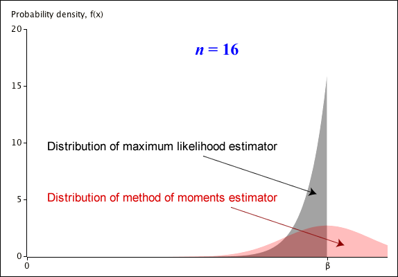
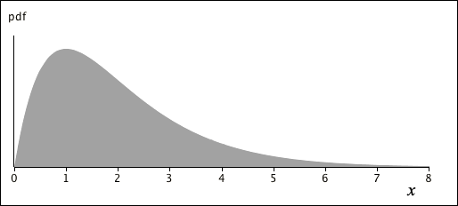
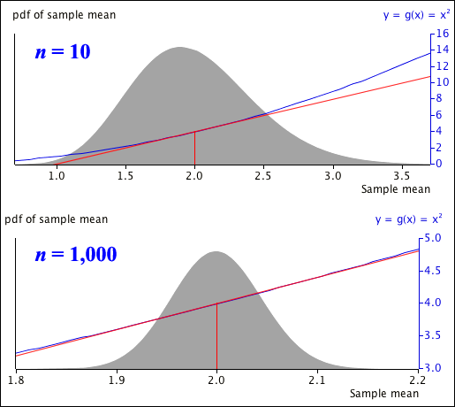

The pdf of this estimator is shown below, together with the pdf for the method of moments estimator — twice the sample mean.

Note that the method of moments estimator is unbiased, whereas the maximum likelihood estimator is biased — it is always less than \(\beta\). However the method of moments estimator is far more variable — its standard error is much higher.
Mean, variance, bias and standard error
It can be shown that the mean of \(Y\) is
\[
E[Y] \;=\; \frac {n\;\beta}{n+1}
\]
The maximum likelihood estimator is therefore biased,
If one random variable is a monotonic function of another — steadily increasing or decreasing — the pdfs of the variables are closely related. (The proof of this result is based on finding the cumulative distribution function of the transformed variable.)
Monotonic function of X
If a continuous random variable \(X\) has probability density function \(f_X(x)\) and another variable is defined as \(Y = g(X)\) where the function \(g(\cdot)\) is a monotonic function with inverse \(X = h(Y)\), then the pdf of \(Y\) is
\(Y\) is said to have a log-normal distribution. If a random variable \(Y\) has a log-normal distribution, we can show in a similar way that \(X = \log(Y)\) will have a normal distribution.
The next example shows the relationship between the exponential and Weibull distributions.
Question
If \(X \sim \ExponDistn(\lambda)\), show that the distribution of \(Y = X^a\) has a \(\WeibullDistn(\diagfrac 1 a, \lambda^a)\) distribution.
(Solved in full version)
8.1.4 Relationship with rectangular distribution
Cumulative distribution function and quantiles
The cumulative distribution function of a continuous random variable \(X\) has been defined as
\[
F(x) \;\;=\;\; P(X \le x)
\]
and is a monotonic increasing function rising from 0 to 1. Its inverse is
Therefore \(F^{-1}(y)\) returns the \(y\)'th quantile of the distribution. Note also that
\[
F\left(F^{-1}(y)\right) \;\;=\;\; y
\]
Applying the CDF as a transformation
Transforming a variable into a rectangular distribution
If a continuous random variable \(X\) has cumulative distribution functions \(F(x)\), then the random variable \(Y = F(X)\) has a \(\RectDistn(0, 1)\) distribution.
(Proved in full version)
The converse of this theorem is also useful.
Transforming a rectangular variable into an arbitrary distribution
If \(F(x)\) is a monotonic continuous function of \(x\) rising from 0 to 1, with inverse function \(F^{-1}(\cdot)\), and \(Y \sim \RectDistn(0, 1)\), then the random variable \(X = F^{-1}(Y)\) has a distribution with cumulative distribution function \(F(x)\).
(Proved in full version)
We now illustrate these results with an example.
Example: Exponential distribution
If \(X \sim \ExponDistn(\lambda)\), then it has cumulative distribution function
Therefore if \(Y \sim \RectDistn(0,\; 1)\), then \(X = -\dfrac {\log(1 - Y)}{\lambda}\) has a distribution with cumulative distribution function \(F(x)\) that is therefore an \(\ExponDistn(\lambda)\) distribution.
8.1.5 Generating random numbers
Computer simulations consist of realisations of models for real-life scenarios. These models involve distributions, so simulations require values that are randomly generated from the distributions. These random values are usually generated on a computer with some algorithm. Strictly speaking, these should be called pseudo-random values but will simply be called random values here.
The basis of generating random values from a distribution is usually an algorithm that generates a random value from a \(\RectDistn(0, 1)\) distribution. For example, Excel has a function to generate one such value:
=RAND()
The relationship between a \(\RectDistn(0, 1)\) distribution and one with cumulative distribution function \(F(x)\) can be used to generate a random value from an arbitrary distribution.
Random values from an arbitrary distribution
If \(y\) is a random value from a \(\RectDistn(0, 1)\) distribution, then \(F^{-1}(y)\) is a random value from the distribution with cumulative distribution function \(F(x)\).
Excel has built-in functions to evaluate \(F^{-1}(y)\) for several common distributions, including the following ones.
For example, a random value from a \(\NormalDistn(\mu = 10, \sigma^2 = 4)\) distribution can be generated in Excel by typing the following into a spreadsheet cell:
=NORM.INV(RAND(), 10, 2)
Generating values from a discrete distribution
Although the methodology above is easiest to explain for continuous random variables, it can also be used to generate random numbers from discrete distributions.
Excel only has a function for the inverse of the binomial distribution's CDF. Typing the following into a spreadsheet cell generates a random value from a binomial distribution:
=BINOM.INV(\(n\), \(\pi\), RAND())
The method can however be applied to other discrete distributions too.
Example: Generating values from a Poisson distribution
The diagram below shows the cumulative distribution function for a \(\PoissonDistn(\lambda = 3)\) distribution — a step function. From a randomly generated \(Y\) with a \(\RectDistn(0, 1)\) distribution, you would read across and down to find a random value from the discrete \(\PoissonDistn(\lambda = 3)\) distribution.
8.2 Linear transformations
8.2.1 Mean and variance
Linear transformations
In this section, we concentrate on a random variable that is defined as a linear transformation of another.
Mean and variance
If \(X\) is a random variable and \(a\) and \(b\) are constants, then the random variable \(Y = a + bX\) has the following mean and variance.
\[ \begin{align}
E[Y] &= a + b \times E[X] \\[0.4em]
Var(Y) &= b^2 \times Var(X)
\end{align} \]
(Proved in full version)
8.2.2 Distribution of transformed variable
Probability density function
Since \(Y = a + bX\) is a monotonic transformation, we can apply the earlier general results to find the pdf of \(Y\). Writing
\[
y = g(x) = a + bx \qquad x = h(y) = \frac{y-a}{b} \spaced{and} h'(y) = \frac 1 b
\]
We now apply this to linear transformations of a normal random variable.
Linear transformation of a normal variable
If \(a\) and \(b\) are constants and \(X \sim \NormalDistn(\mu, \sigma^2)\), the random variable \(Y = (a + bX)\) also has a normal distribution
\[
Y \;\;\sim\;\; \NormalDistn(a + b\mu,\; b^2 \sigma^2)
\]
(Proved in full version)
In particular, this result provides the distribution of a z-score.
Distribution of z-scores
If \(X \sim \NormalDistn(\mu, \sigma^2)\), the random variable \(Z = \dfrac {X-\mu} {\sigma} \) has a normal distribution with zero mean and standard deviation one,
\[
Z \sim \NormalDistn(0, 1)
\]
(Proved in full version)
Probabilities about z-scores can be found using computer software or tables.
8.2.3 Scale and location parameters
In some families of distributions, a linear transformation results in another distribution within the same family.
Definition
In a family of distributions, \(X \sim \mathcal{Distn}(\theta)\), the parameter \(\theta\) is called a location parameter if \(Y = (X + a) \sim \mathcal{Distn}(\theta + a)\).
If the family of distributions has additional parameters, they should remain unchanged after the transformation.
A location parameter is affected by adding a constant to \(X\); a scale parameter is affected by multiplying \(X\) by a constant.
Definition
In a family of distributions, \(X \sim \mathcal{Distn(\phi)}\), the parameter \(\phi\) is called a scale parameter if \(Y = bX \sim \mathcal{Distn(b\phi)}\).
In families of distributions with a location parameter \(\theta\), \(X \sim \mathcal{Distn(\theta, \phi)}\), the parameter \(\phi\) is also called a scale parameter if \(Y = bX \sim \mathcal{Distn(b\theta, b\phi)}\).
If the family of distributions has additional parameters, they should again remain unchanged after the transformation.
We now apply this to normal distributions.
Normal distribution
If \(X \sim \NormalDistn(\mu, \sigma)\), we showed that \(Y = a + bX \sim \NormalDistn\left(a + b\mu, (b\sigma)^2\right)\).
Since \(Y = X + a \sim \NormalDistn\left(a + \mu, {\sigma}^2\right)\), the distribution's first parameter, \(\mu\), is a location parameter.
\(\sigma\) satisfies the second definition for scale parameters since if \(X\) has a normal distribution with parameters \(\mu\) and \(\sigma\), \(bX\) has one with the corresponding parameters \(b\mu\) and \(b\sigma\).
8.2.4 Scale and location examples
Reparameterisation of a family of distributions may be necessary before we can identify location and scale parameters.
Rectangular distribution
Rectangular distributions are usually defined to have
then \(Y = a + bX\) has a rectangular distribution with pdf
\[
f_Y(y) = \begin{cases}
\frac {\large 1} {\large b\phi} & \quad\text{for } (a + b\alpha) \lt y \lt (a + b\alpha) + b\phi\\[0.2em]
0 & \quad\text{otherwise}
\end{cases}
\]
This is a rectangular distribution with parameters \(\alpha^* = a + b\alpha\) and \(\phi^* = b\phi\) so \(\alpha\) and \(\phi\) are location and scale parameters.
In the following example, reparameterisation is again necessary before a scale parameter can be found.
Question
In a \(\GammaDistn(\alpha, \beta)\) distribution, show that \(\phi = \frac {\large 1}{\large \beta}\) is a scale parameter.
(Solved in full version)
8.3 Delta method
8.3.1 Variance of transformed variable
Distribution of \(Y = g(X)\)
If \(X\) has pdf \(f_X(x)\) and \(g(\cdot)\) is a monotonic function, then the transformed variable \(Y = g(X)\) has pdf
The approximation relies on the transformation being nearly linear for the values of \(X\) that are likely to be observed. \(\Var(X)\) must therefore be small.
Application to estimators of parameters
If \((X = \hat{\theta})\) is a consistent estimator of a parameter, \(\theta\), then\(\Var(\hat{\theta}) \to 0\) as the sample size, \(n\), increases. The delta method therefore gives an approximate mean and variance for any continuous function of it, \(g(\hat{\theta})\), in large samples.
Quadratic transformation
We now consider a random variable, \(X\), that is assumed to arise from a family of distributions with mean \(\mu\) and variance \(\sigma^2\). For example, its distribution might be as shown below.

The mean of a random sample, \(\overline X\), might be used to estimate \(\mu\), so we now consider \(\overline X ^2\) as an estimator of \(\mu^2\). The delta method states that in large samples,
This approximation relies on the transformation being close to linear around the values of \(\overline{X}^2\) that are most likely to be observed.

When \(n = 10\), the sample mean is likely to be between 1.0 and 3.5, but the quadratic (blue) is far from linear (red) so the delta method will not give accurate values for \(E\Big[\overline{X}^2\Big]\) or \(\Var\Big(\overline{X}^2\Big)\).
However when \(n = 1,000\), the quadratic curve is almost linear within the range of likely x-values (1.9 to 2.1) so the delta method will work well.
8.3.2 Examples
We now give two applications of the delta method.
Question: Estimator of a geometric distribution's parameter, π
If \(X \sim \GeomDistn(\pi)\), with probability function
the method of moments estimator of \(\pi\) and its maximum likelihood estimator are both the inverse of the sample mean,
\[
\hat{\pi} \;\;=\;\; \dfrac 1{\overline{X}}
\]
Use the Delta method to find the approximate mean and variance of this estimator.
(Solved in full version)
In this example, the delta method gives the same approximate standard error as would be found using the second derivative of the log-likelihood, but approximations from the two methods are not always equal.
Odds
Uncertainty is often described by probability, but the chance of an event happening can alternatively be described by its odds.
Definition
The odds for an event are the ratio of the probability of the event happening to the probability of it not happening,
Note that whereas probabilities must be between 0 and 1, the odds of an event can be greater than 1.
Question: Odds of success
In a series of \(n\) independent success/failure trials that each have odds \(\theta\) of success, \(x\) successes are observed. What is the maximum likelihood estimator of \(\theta\)? If \(n\) is large, what is its approximate standard error?